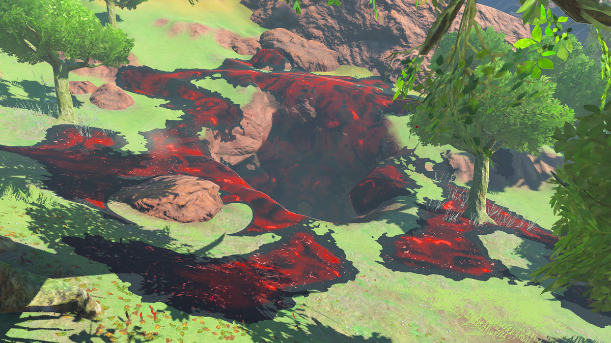
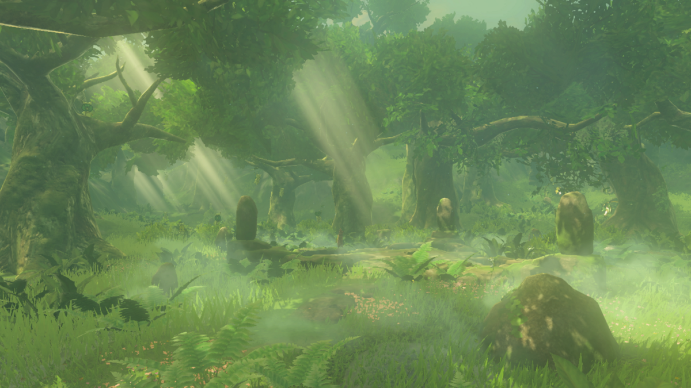
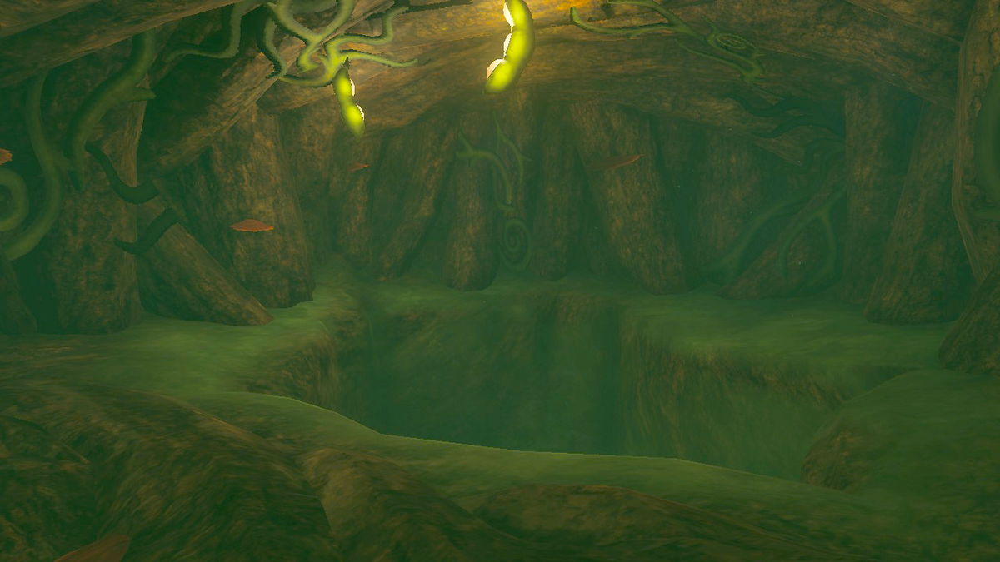

先说结论：三步走完
米涅鲁讲出了真相：塞尔达公主临走前交代，要打听大师之剑的下落就去找大德库树。这篇分三步——回监视堡垒向普尔亚汇报、从米希森林裂缝下地底、通天术上克洛格森林净化大德库树。难在两处：迷失森林地面进不去，只能从地底走；大德库树肚子里有瘴气之手和幻影加侬两场硬仗。
| 步骤 | 地点 | 关键动作 |
|---|---|---|
| 1. 回监视堡垒汇报 | 监视堡垒 | 找普尔亚，米涅鲁让你去克洛格森林找大德库树 |
| 2. 米希森林裂缝下地底 | 米希森林 | 跳进裂缝，沿地底向西北到里科纳苏姆树根，通天术上地面 |
| 3. 净化大德库树 | 克洛格森林 | 进树里跳大德库树裂缝，打瘴气之手与幻影加侬 |
接取与奖励
| 项目 | 内容 |
|---|---|
| 接取 | 完成「来自太古的指引」后，米涅鲁讲出真相，任务自动开始 |
| 前置 | 来自太古的指引（灵殿击败被夺构装体、米涅鲁立下誓言） |
| 位置 | 监视堡垒 · 米希森林 · 克洛格森林 |
| 奖励 | 大德库树在地图上标出大师之剑的移动位置、开启「丢失的勇者之剑」 |
| 后续 | 追白龙拔剑 |
出发前准备
- 回瘴气血的料理：向阳草做的料理能回被瘴气扣掉的红心，打瘴气之手之前吃几口。
- 炸弹花：多带，附魔在箭上轰瘴气之手最管用。
- 滑翔伞：地底那段要滑翔一段。
- 发光果：地底赶路照明用。
- 祝福之光：拔剑要两圈绿色精力，不够的先攒——20 个祝福之光能换 5 次精力升级，正好凑满第二圈精力；心不够可以找恶魔像把心换成精力。
第一步：回监视堡垒向普尔亚汇报
灵殿出来先回监视堡垒找普尔亚。米涅鲁在灵殿讲出了真相：塞尔达公主临走前说过，要打听大师之剑的下落就去找大德库树。普尔亚听完让你去克洛格森林——大德库树就在森林正中央。
顺便在监视堡垒找赫斯图聊两句也行，他会告诉你克洛格森林出了状况，情况不太对劲。
第二步：米希森林裂缝下地底
克洛格森林在迷失森林深处，地面上进不去——整片森林被瘴气封着，走进去只会迷路，滑翔伞从天上落也落不进去。唯一的路在地底：跳进米希森林裂缝。

- 米希森林裂缝在森林驿站以北的路上，约 (1038, 1662, 0158)，路边一处冒着瘴气的红色大坑就是。
- 落地是米希树林，沿地底向西北走，跟着发光的树根和往家走的克洛格，目标是里科纳苏姆树根，约 (0407, 2132, -0592)。
- 树根旁有处石台，站上去用通天术，直接穿进克洛格森林，出来就在大德库树面前。
- 顺手点亮大德库树旁的姆萨诺奇拉神庙，往返有个传送点。
第三步：净化大德库树

大德库树被瘴气缠住了，肚子疼得厉害，连话都说不利索。想跟它说话得先治好它：进树里，跳进树内的大德库树裂缝。

- 一落地就围上来瘴气之手：炸弹花附魔的箭轰，叫上贤者一起打，别在瘴气里站太久。
- 瘴气之手打完，幻影加侬现身——只有一只，打法和城堡战一样，格挡、闪避、看准破绽还手。
- 打完回地面，爬上大德库树根部的树桩，站在带三片绿叶的小树枝旁跟它说话。
- 大德库树感应到大师之剑，在地图上标出它的移动位置，任务完成，开启「丢失的勇者之剑」。
下一步：追白龙拔剑
大师之剑在白龙头上。白龙一直在天上绕着海拉鲁飞，地图上的任务标记会跟着它动，出发前先看一眼标记在哪。
- 从最近的瞭望台弹射升空，或者从高空岛上滑翔过去，落在龙背上往头上走。
- 拔剑要两圈绿色精力——临时吃料理涨的黄色精力不算，精力不够拔到一半会被弹开。
- 按住 A 拔剑，剑一到手，任务「丢失的勇者之剑」就完成了。

关键信息
| 项目 | 内容 |
|---|---|
| 任务类型 | 主线任务，第 18 篇 |
| 前置任务 | 来自太古的指引 |
| 关键地点 | 监视堡垒、米希森林裂缝、里科纳苏姆树根、克洛格森林、大德库树 |
| 关键数字 | 拔剑要两圈绿色精力（临时黄色精力不算） |
| 注意 | 被遗忘神殿只有地画地图与壁画，与大师之剑的线索无关 |
| 注意 | 地图上追踪的是大师之剑的任务标记（会跟着龙动），不是龙形标记 |
容易翻车的地方
- 地面硬闯迷失森林：瘴气封路，走进去只会迷路；天上滑翔也落不进去，只能从地底走。
- 瘴气之手前不吃抗瘴气料理：瘴气扣的红心普通料理回不上来，向阳草料理提前备好。
- 靠吃精力料理拔剑：临时黄色精力不拔剑，只认绿色精力圈，不够先去神庙攒祝福之光。
- 盯着龙形标记找剑：地图上真正有用的是大师之剑的任务标记，跟着它走。
- 打完幻影加侬扭头就走：回大德库树根部的树桩上跟它说话，任务才算完。
一句话总结
回监视堡垒向普尔亚汇报、米希森林裂缝下地底、通天术上克洛格森林、打瘴气之手与幻影加侬净化大德库树——大德库树标出了大师之剑的位置，下一站追白龙拔剑。